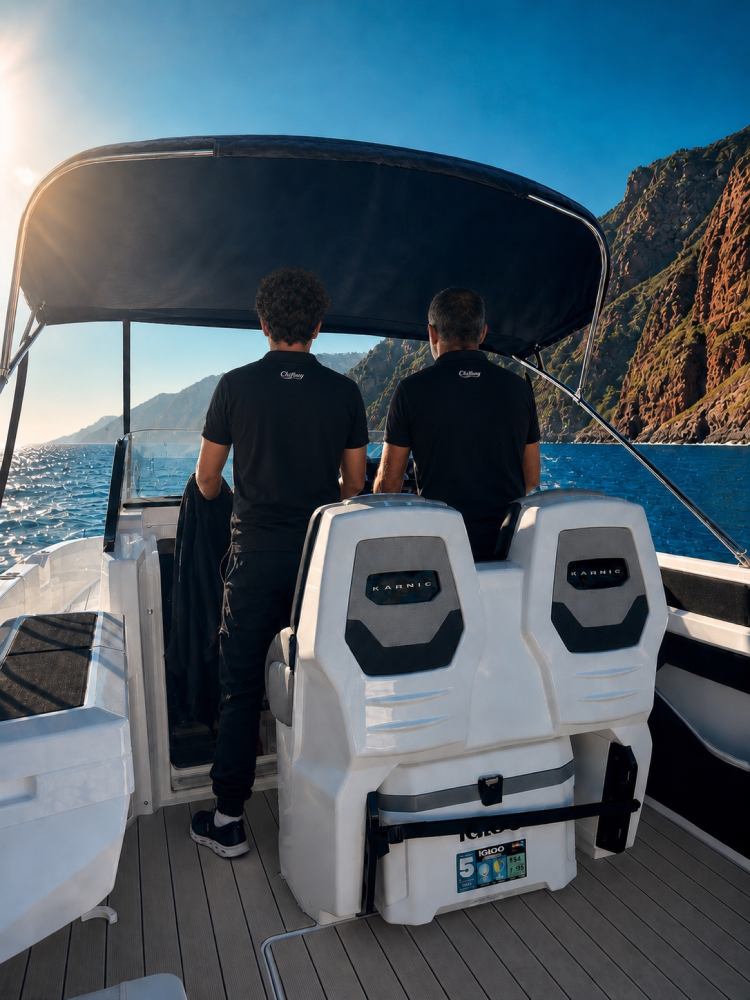
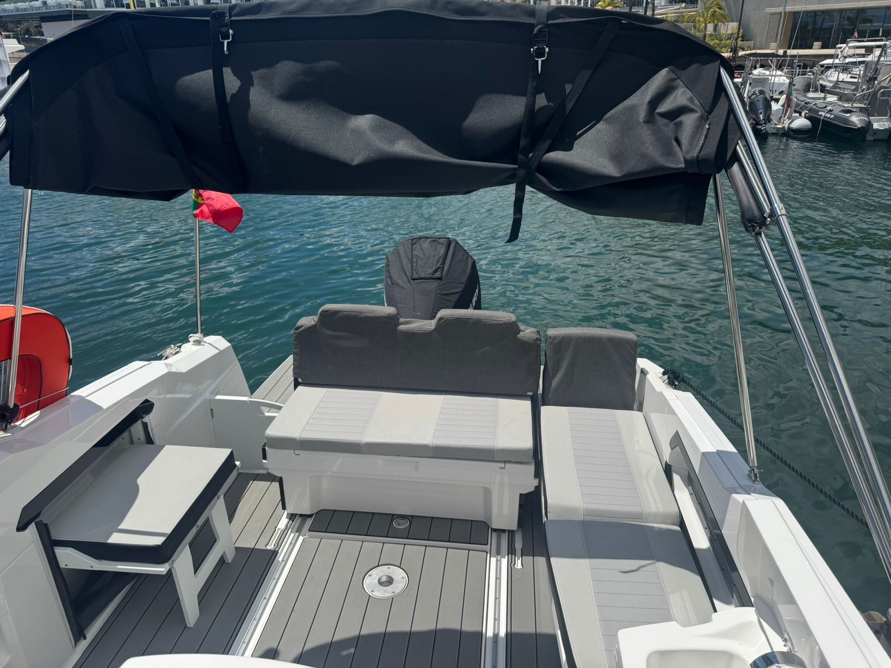

Included
You leave with the whole trip on film
Nothing extra to pay and nothing to set up. We film and photograph the trip and send it all to you after.

Looking for a boat rental with skipper in Funchal? With us you charter the whole boat, a 2026 Karnic R8S, and two licensed local skippers drive it. There is no self drive. Up to 5 guests, from €400.
Many people search for a boat to rent in Funchal. In Madeira that almost always means a boat with a skipper, and with us it means two. You book the whole boat for your group, and two licensed local skippers take you along the coast while you swim, eat and take photos.
The boat is a 2026 Karnic R8S: 9 metres, a Mercury V8 300 hp engine, cushioned seating, a swim platform and a bathroom on board. It takes up to 5 guests, so there is room to move and lie in the sun.
See the trips
Same boat, same crew. Pick a day trip to swim or a sunset cruise for the evening light.
Local, licensed, and on board every trip. RNAAT 305/2026.
9 m, Mercury V8 300 hp, swim platform, bathroom on board.
Fuel, crew, drinks and food. One price for the boat, not per person.
Madeira's south coast is open Atlantic. The swell changes during the day, and the best spots, like the anchorage at Fajã dos Padres or the water under Cabo Girão, need local knowledge. That is why we only offer the boat with our crew.
It also means nobody in your group has to stay sober or watch the sea. The skippers handle the boat, the drone and the photos, and you get the whole trip on film afterwards.

No. We do not rent boats without crew. Our two licensed skippers drive the boat on every trip, and you sit back, swim and enjoy the coast. Chifbay is a licensed maritime tourism operator, RNAAT 305/2026.
We run set trips: the sunset cruise for 2 h or 2 h 30, and the day trip for 2 h 30 or 3 h at 10:00 or 14:00. For another date or time, message us on WhatsApp and we will tell you what is possible.
One flat price for the whole boat, up to 5 guests: €400 (sunset 2 h), €500 (sunset 2 h 30 or day trip 2 h 30) and €600 (day trip 3 h). Fuel, the skippers, drinks and food are included. Never per person.
Never. The boat, the crew and the trip are yours alone, from 1 to 5 guests.
A 2026 Karnic R8S: 9 metres, Mercury V8 300 hp, cushioned seats, a swim platform and a bathroom. On the day trip there are paddle boards. Every trip includes drinks and food, an Insta360 360° video, drone footage (weather allowing) and camera photos.
Marina do Funchal, Pontoon C, next to the statue. Arrive 15 minutes before departure. Free cancellation up to 24 hours before.
Nothing extra to pay and nothing to set up. We film and photograph the trip and send it all to you after.
Check live dates and book the whole boat in a couple of minutes. Up to 5 guests, from €400.